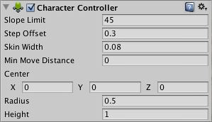

角色控制器 Character Controller
- 大多数第一人称、第三人称游戏中都不是使用给钢体施加力的方式来控制主角运动的。
- 角色控制器专门用来控制主角的动力，并且可以不使用钢体。
- 角色控制器可以模拟重力。
- 不能通过物理作用的方式影响角色控制器。
角色控制器的属性
Height角色的高度，通常和现实中的人物一样设置为2米左右。Radius角色的半径，用于控制人物的胖瘦。Center设置角色中心点的位置。Slope Limit限制角色能爬的最大坡度。通常设置为90度以下，这样角色就不会走到墙上。Step Offset移动步长。通常2米左右的人移动步长设置在0.1到0.4米.Skin Width皮肤厚度。如果这个值太小角色容易被卡住，太大角色容易抖动。通常将这个数据设为0.01到角色半径的10%之间。Min Move Distance最小移动距离。官方推荐把这个值设为0。

isGrounded可以获取角色当前是否在地面。velocity可以获取角色当前的速度向量。
角色控制器的方法
有两个方法控制角色移动：
SimpleMove方法通过一个速度参数控制角色移动。
using UnityEngine;
using System.Collections;
[RequireComponent(typeof(CharacterController))]
public class ExampleClass : MonoBehaviour {
public float speed = 3.0F;
void Update() {
CharacterController controller = GetComponent<CharacterController>();
float v = Input.GetAxis("Vertical");
controller.SimpleMove(transform.forward * speed * v);
}
}
Move方法通过一个增量参数控制角色移动。
//用箭头键控制角色移动，当按下空格键时跳起。
using UnityEngine;
using System.Collections;
public class ExampleClass : MonoBehaviour {
public float speed = 6.0F;
public float jumpSpeed = 8.0F;
public float gravity = 20.0F;
private Vector3 moveDirection = Vector3.zero;
void Update() {
CharacterController controller = GetComponent<CharacterController>();
if (controller.isGrounded) {
//我们着地了，所以直接通过轴重新计算moveDirection。
moveDirection = new Vector3(Input.GetAxis("Horizontal"), 0, Input.GetAxis("Vertical"));
moveDirection = transform.TransformDirection(moveDirection);
moveDirection *= speed;
// 跳跃
if (Input.GetButton("Jump"))
moveDirection.y = jumpSpeed;
}
//Move方法需要自己写重力效果
moveDirection.y -= gravity * Time.deltaTime;
//移动控制器
controller.Move(moveDirection * Time.deltaTime);
}
}
- 调用
SimpleMove时Y轴上速度会被忽略，自动应用重力效果。 - 调用
Move时重力效果需要自己写。 - 建议每帧只调用一次
Move或者SimpleMove。
碰撞检测
- 角色控制器通常不加钢体，常规的碰撞检测中至少有一方要加钢体，因此
OnCollisionXXX和OnTriggerXXX可能检测不到碰撞。 - 角色控制器有专门的碰撞检测方法
OnControllerColliderHit。 - 角色控制器不能将钢体推开，如果要做这件事可以使用
OnControllerColliderHit。 - 在使用
Move方法移动时，collisionFlags属性能指明是哪个部分发生了碰撞。